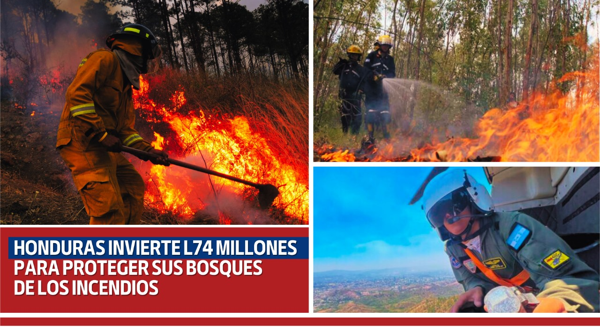

El cuidado del medio ambiente representa todas aquellas conductas que los seres vivos deben tomar en cuenta a la salud de la naturaleza. La finalidad es hacerlo un medio con más oportunidades y más provechos que satisfacen la vida de todas las generaciones.
El cuidado del medio ambiente es un pilar primordial para que esta idea se concrete en algún momento. Esto implica proteger el entorno, la vida circundante y los recursos que contiene. Debemos mantener un medio ambiente bien cuidado y así prolongar la vida de todos los seres vivos que habitan en él.
Podemos pensar que nosotros, personas corrientes, no podemos hacer nada al respecto, que son las grandes empresas o gobiernos los que tienen la obligación de tomar las medidas necesarias para acabar con este problema, pero no, lo cierto es que absolutamente todos somos responsables del maltrato que sufre nuestro planeta y que sí está en nuestra mano cambiar con esto con cualquier acción por pequeña que sea. Tanto en nuestro hogar como en nuestra empresa. Ahora verás cuáles son las medidas más eficaces para preservar el medio ambiente y para mantenerlo cuidado; a pesar de todas las condiciones que en ocasiones puedan limitarlo.
En Honduras resalta la destrucción y el acelerado deterioro ambiental y degradación de los suelos provocado por los incendios forestales, minería a cielo abierto, tala de bosques y otros daños en áreas protegidas y el asesinato de especies en extinción, lo que provoca sequias y escasez de agua. De acuerdo con datos del Centro Agronómico Tropical de Investigación y Enseñanza, en los últimos sesenta años se han deforestado en Honduras alrededor de 1.2 millones de hectáreas. Solo en los últimos 20 años, se habrían perdido entre 23.000 y 58.000 hectáreas anuales.